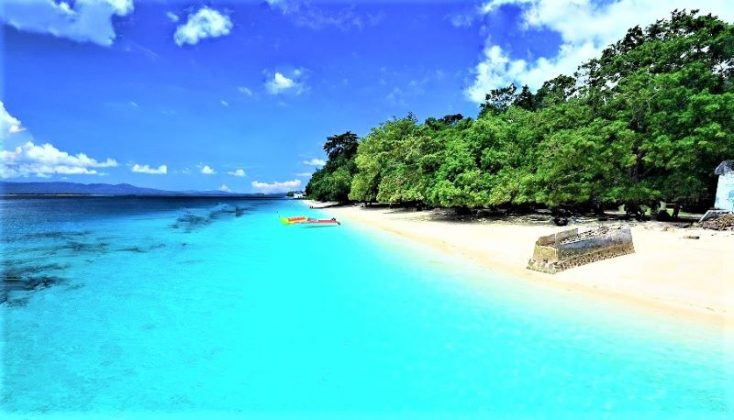

Tugas Ke-4
Nama Lengkap : Lisbet Tildjuir
NIM : 202055202106

Deskripsi :
Pantai Liang disebut juga Pantai Hunimua, pantai ini memiliki kadar ombak yang tenang serta hamparan pasir pantainya yang berkilau serta air laut berwarna hijau kebiruan dan suasana yang menyenangkan. Banyak kegiatan yang asyik dilakukan di Pantai Liang ini, seperti berenang, diving, snorkeling, memancing atau sekedar trekking menyusuri pantai sambil menikmati angin laut serta deburan ombak. Karena ombak Pantai Liang ini sangat tenang, tak heran kegiatan di laut pantai ini selalu ramai dan jadi inceran wisatawan.